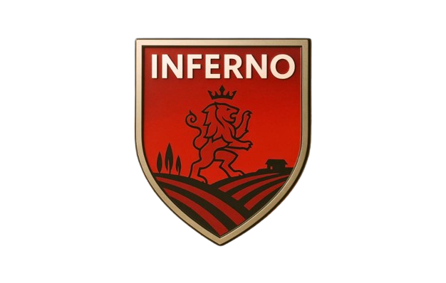
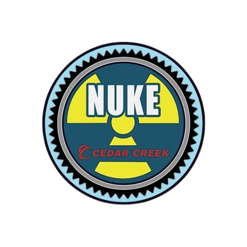
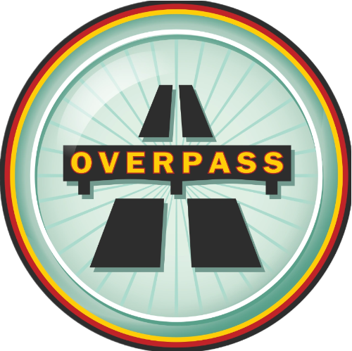
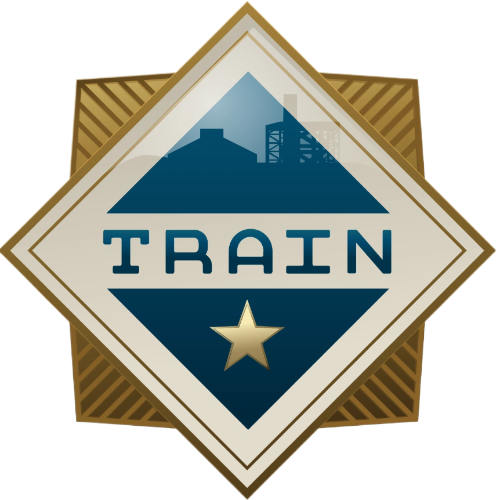

Premier Pályák
A Counter-Strike 2 összesen 19 hivatalos pályát kínál a
játékosok számára, többféle
játékmódba rendezve.
Ezek közül az egyik a Premier mód, ahol a játékosok közös szavazással
döntik el, melyik pályán
zajlik majd a mérkőzés. A rendszer célja, hogy kiegyensúlyozott és versenyszerű játékmenetet
biztosítson, miközben mindenki beleszólhat abba, milyen terepen szeretne játszani.
Az alábbiakban a Premier pályák listája látható, a játékosok által legtöbbször
választottól a legkevésbé kedvelt felé haladva:
 Mirage - 24.3%
Mirage - 24.3%
A Mirage egy közel-keleti stílusú városi környezet, amely kiegyensúlyozott, kompetitív pályaként vált a játék egyik legkedveltebb pályává.
- A oldal egy tágas tér, ahol a T-k több irányból is támadhatnak: palace, ramp és connector irányából.
- B oldal jóval zártabb, a lakónegyed felett elhelyezkedő udvarral, ahol a röviden való, gyors benyomulás és a füstös belépés a leghatékonyabb.
- A pálya központi eleme "mid", amely összeköti a pálya különböző részeit, és birtoklása szinte mindig stratégiai előnyt jelent.
- A Mirage-t a jól megtanulható gránát-dobások és gyors rotációk teszik kedveltté.
Dust2 - 21.8%
A Dust2 a CS történelmének legklasszikusabb pályája, egyszerű, de örökérvényű kialakítással. A pálya egy sivatagos, közel-keleti környezetet mutat, jellegzetes épületekkel és hosszú, nyitott vonalakkal.
- A oldal két részre oszlik: A long felől érkező támadások és a shorton lévő gyors, taktikus push között.
- B oldal egy szűk bejáratú, sötét alagútból megközelíthető hely, ahol a CT-k jó fedezékpozícióból védekezhetnek.
- A Dust2 egyszerűsége miatt a pontos célzást jutalmazza, gyakoriak a hosszú távú párbajok, különösen A long és mid környékén.
 Inferno - 14.7%
Az Inferno egy európai, mediterrán kisváros utcáiban játszódik, sok szűk átjáróval és ikonikus tereptárggyal.
- A oldal a harangtorony közelében található, amelyet főleg "short"-ról és "apartment" felől támadnak a T-k.
- B oldal a híres “banana” nevű keskeny utcához kapcsolódik, ahol állandó a gránátharc a területért.
- A pályán nagy hangsúly van a utility használaton, mert a szűk terek miatt a molotovok, füstök és gránátok jelentősen meghatározzák az első perceket.
- Rotációk szűkek és hosszúak, ezért a jó helyezkedés és "map-control" kulcsfontosságú.

Ancient - 13.3%
Az Ancient egy esőerdővel benőtt, ősi amerikai civilizáció romjai között elhelyezkedő pálya, amely látványosan keveri a szűk folyosókat és a nagy, nyitott tereket.
- A oldal egy masszív kőépítmény előterében található, ahol a támadók gyakran füstökkel és gyors rohamokkal próbálják meg elfoglalni.
- B oldal jóval zártabb, pánikhelyzetekre és közelharcra alkalmas terep, ahová a támadók csarnokszerű átjárón vagy az alsó, fás területen keresztül érkezhetnek.
- A pálya egyik jellegzetessége, hogy sok az egyenes szög, kevés a lekerekített forma, ami erős pozíciós játékot és precíz célzást igényel.
 Nuke - 12.5%
A Nuke egy ipari atomlétesítmény, amely ikonikus több szintes felépítéséről ismert. A pálya különlegessége a vertikalitás, mivel a játékosok egymás alatt és felett mozoghatnak.
- A oldal a hangárépület felső szintjén található, a híres piros “silo” mellett.
- B oldal alattuk, a reaktor teremben kapott helyet, amely mélyen a föld alatt van.
- A pályán többféle útvonal vezet a site-ok közé: szellőzőkön, külső udvaron, folyosókon, létrákon és szűk csatornákon át.
- A CT-k általában erős pozíciós előnnyel indulnak, a T oldal pedig gyakran taktikásabb játékot követel.
 Overpass - 9.3%
Az Overpass Berlin hangulatú, parkosított és betonszerű épületekkel tagolt környezetben játszódik.
- A oldal egy park és kilátó körül helyezkedik el, ahol több szint és fedezék nehezíti a támadók dolgát.
- B oldal a csatornarendszer mellett, graffitis betonrengetegben kapott helyet. A támadók ide a “short pipe” vagy a hosszú csatorna felől érkeznek.
- A pálya egyik különlegessége, hogy a CT-k közelebb spawnoznak az A site-hoz, mint bármely más pályán.
- Az Overpass sok strukturált teret ad, így a T oldal gyakran kénytelen lassabb, taktikásabb játékot alkalmazni, miközben a CT-k agresszív előretolt pozíciókat is játszhatnak.
 Train - 4.1%
A Train a CS egyik legösszetettebb pályája, amely egy ipari vasútállomáson játszódik, rengeteg vagon, fedezék és vertikális elem között.
- A oldal egy nagyobb, nyílt terület, tele vonatkocsikkal, ahol a jó pozíciófogás és a magas helyek kihasználása létfontosságú.
- B oldal egy zártabb, de szintén vertikális, létrákkal, platformokkal és teraszokkal tagolt terület.
- A pálya egyik nehézsége a komplex útvonalhálózat, amely lehetővé teszi a gyors rotációkat és meglepő támadási irányokat.
- A Train általában a CT-knek kedvez, mert sok a fedezék és a szög, amelyeket jól lehet védeni megfelelő eszközökkel.